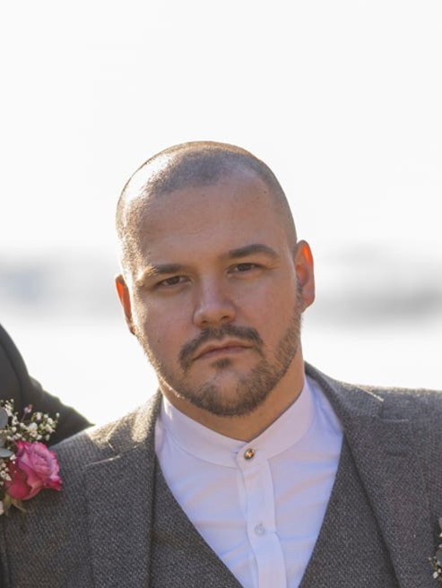

Marius Rønningen

Contact info
Summary
Hello! My name is Marius and i come from Norway. I am a hardworking individual who
is not afraid of a challenge. Ive got experience in Customer service, Production lines and Fiber infrastructure.
Education
- Highschool in Gausdal at Gausdal VGS "Pierre De Coubertin
- Certificate Of Excellence from Mercedes Benz (Service Advisor)
Work experience
- Private in the Norwegian Army
January 2012 - January 2013
- Shop Assistant, Gausdal Landhandleri AS
January 2013 - August 2015
- Customer service
- Area specialist for paints and materials
- Service Advisor, Bertel O. Steen Lillehammer AS
August 2015 - june 2019
- Service advisor for Mercedes Benz
- Warranty advisor
- Mercedes Cars, Vans, Trucks and Busses
- Fiber-optic infrastructure, ELTEL
July 2019 to February 2020
- Fiber-optic infrastructure
- Fiber-optic splicing for infrastructure and homes
- Service Adviser, Bertel O. Steen innlandet avd. Hamar
September 2022 - Present
- Service advisor for Mercedes Vans